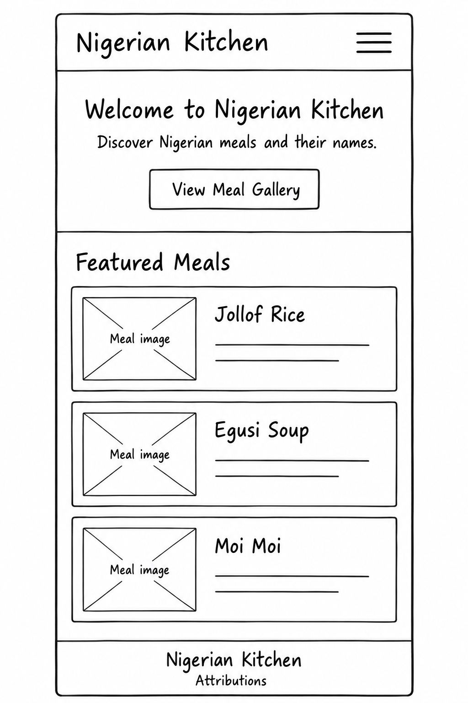
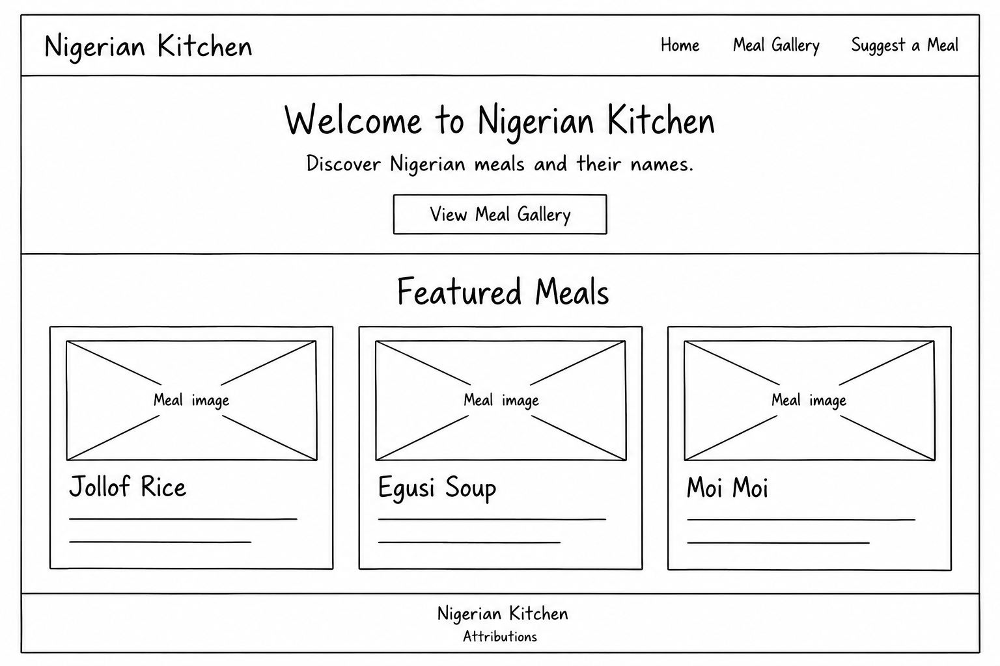

Site Name
Nigerian Kitchen
I chose this name because it connects the website with Nigerian food. It is simple to remember and gives visitors an idea of what they will find on the site.
Site Purpose
Nigerian Kitchen will showcase Nigerian meals using pictures, names, and short descriptions. The site will help visitors recognize different meals and learn what they are called.
The intended audience includes people who are unfamiliar with Nigerian food and people who want to discover more Nigerian meals.
Planned Pages
- Home: Introduce the website and show a few featured meals.
- Meal Gallery: Display Nigerian meals with their names, pictures, categories, and short descriptions.
- Suggest a Meal: Provide a simple form where visitors can suggest a Nigerian meal to include on the site.
Planned Features
The gallery will load at least 15 meals from a local JSON file. Visitors will be able to filter meals by category and open a dialog for more information. Their selected category will be saved in local storage. A confirmation page will show the information entered in the suggestion form.
Scenarios
- I have seen a picture of a Nigerian meal. What is it called?
- Which other Nigerian meals can I discover, and what do they look like?
- How can I suggest a Nigerian meal that is missing from the gallery?
Color Scheme
These three colors will be used throughout the website and this site plan.
-
Dark green
Dark Green
#1F4D36
Used for headings, navigation links, buttons, and the header background.
-
Cream
Cream
#FFF8EC
Used for page backgrounds and text on dark green or dark brown backgrounds.
-
Dark brown
Dark Brown
#5A3020
Used for body text and the footer background.
Typography
Georgia: Headings
Georgia will be used for the site name and all headings.
Arial: Body Text
Arial will be used for paragraphs, navigation links, form labels, and buttons. This paragraph is an example of the body font.
Home Page Wireframes
These black-and-white sketches show the home page layout on small and larger screens.
Mobile View

Desktop View
